Here you can find current and past sprints. For more information about developer events and Standards, please check the wiki page and the developer website.
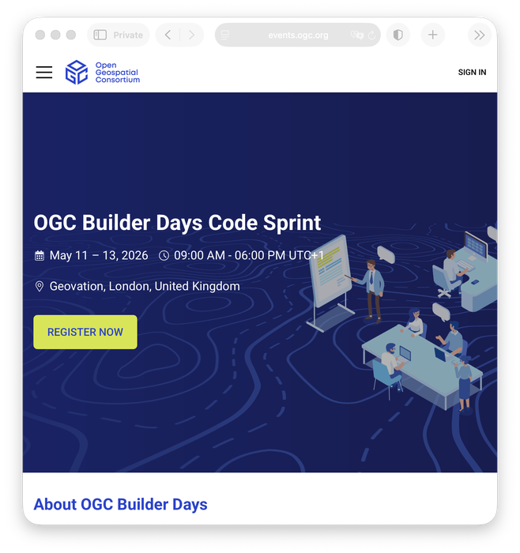
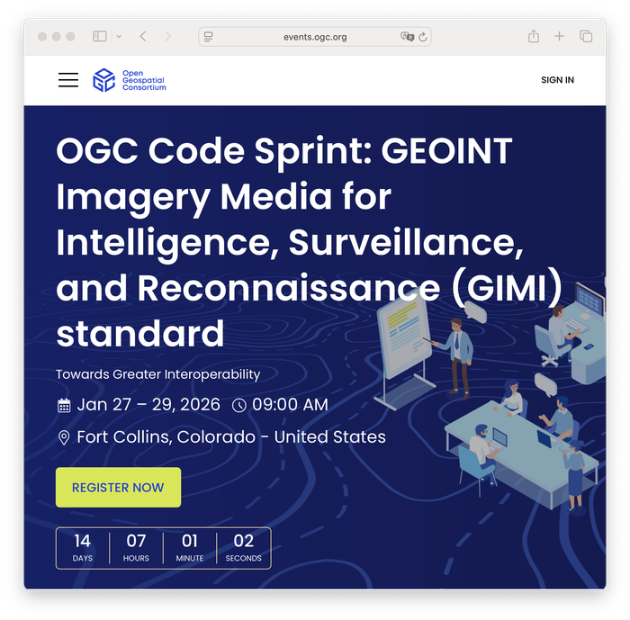
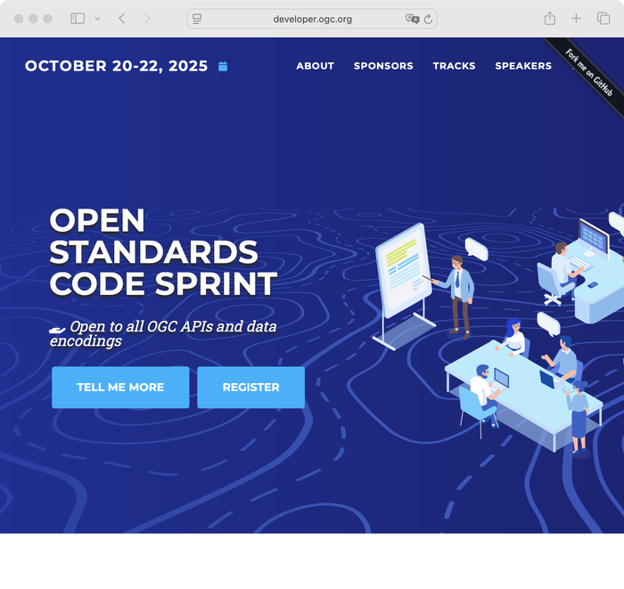
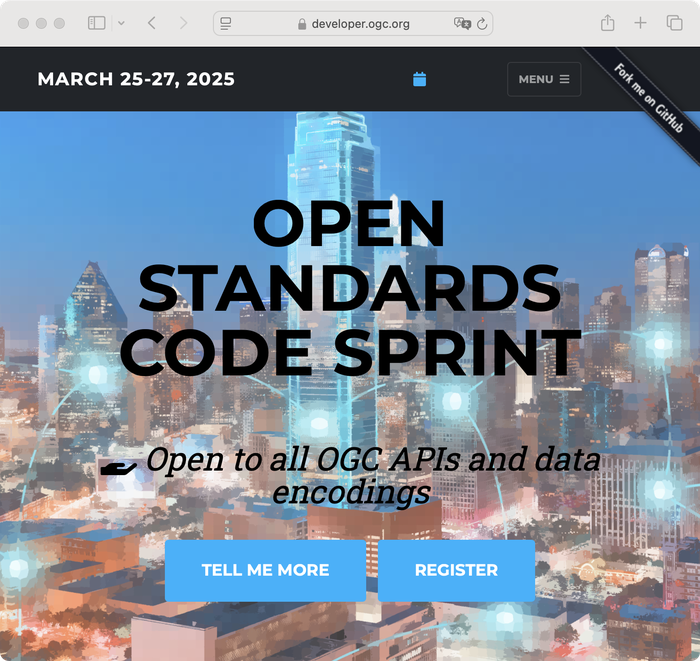
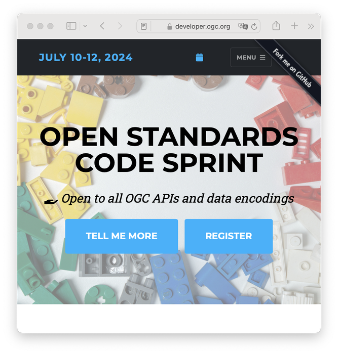
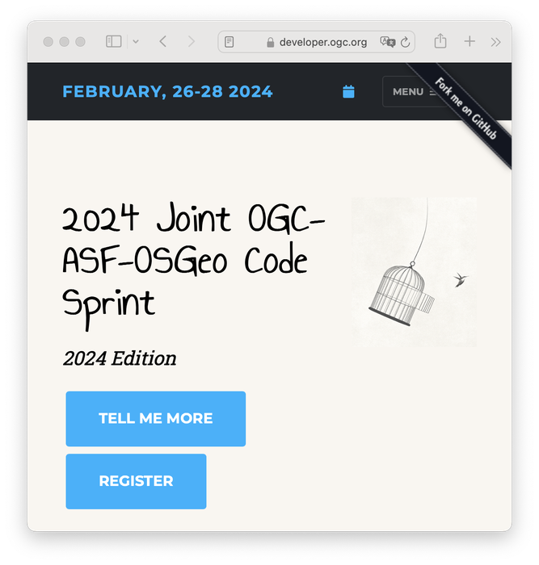
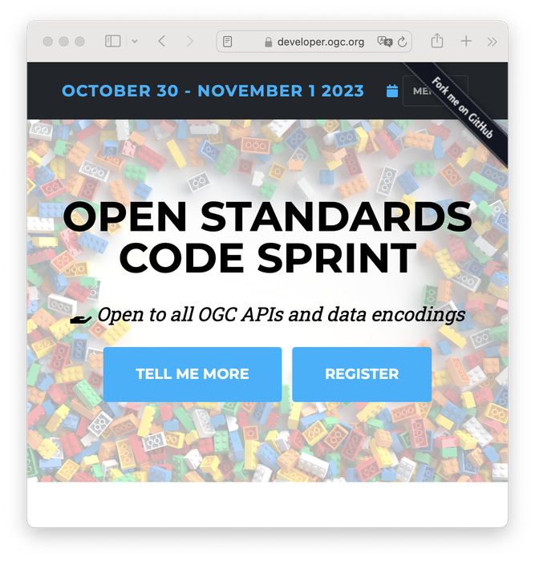
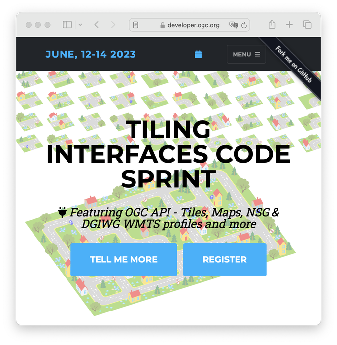
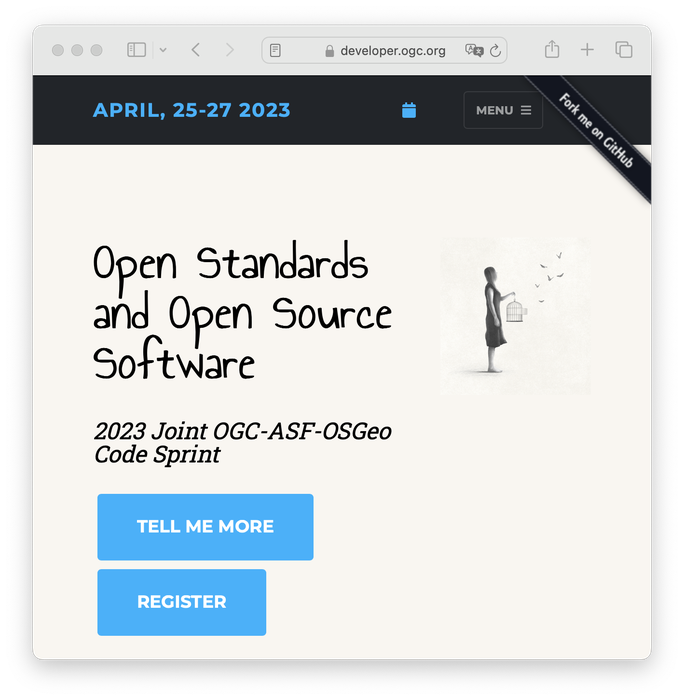
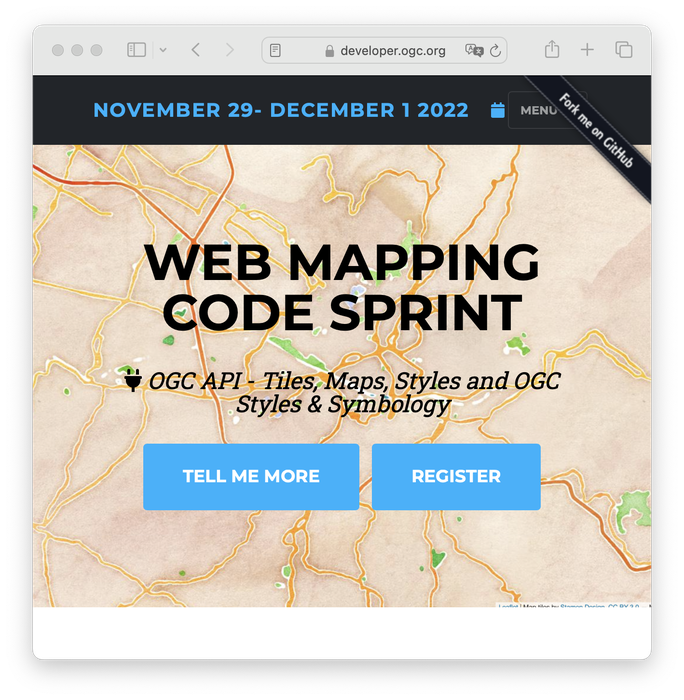
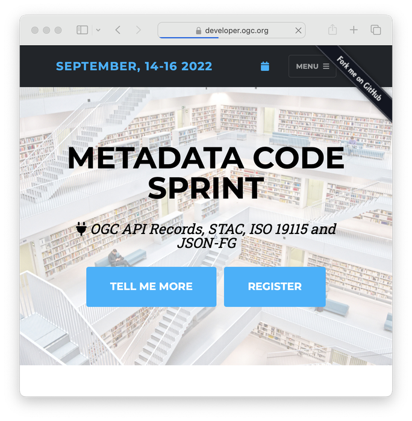
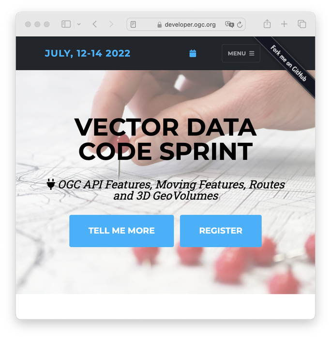
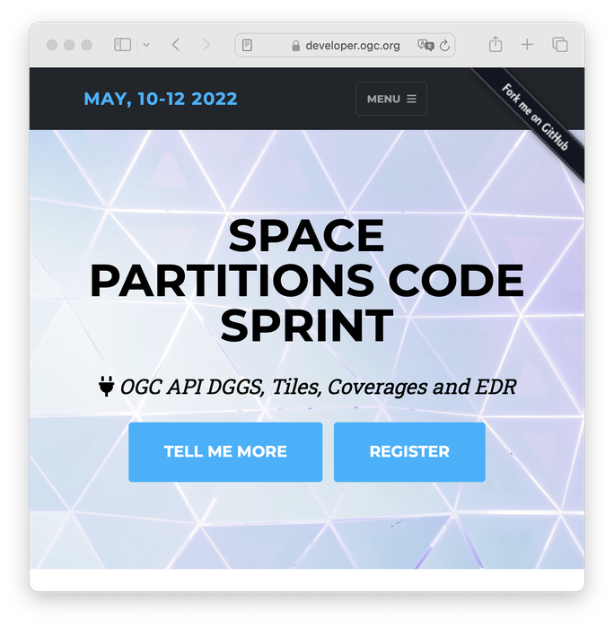
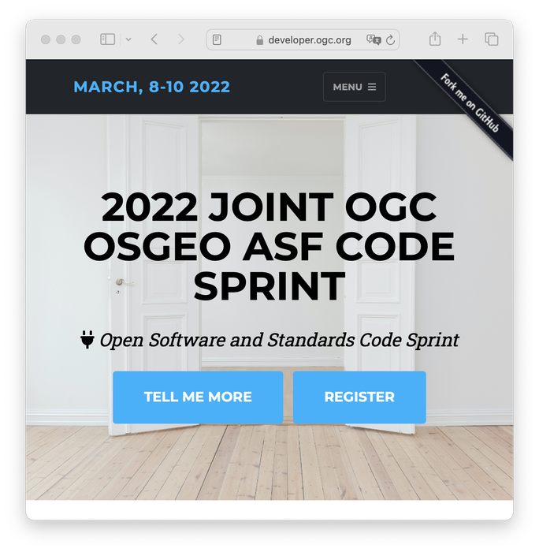
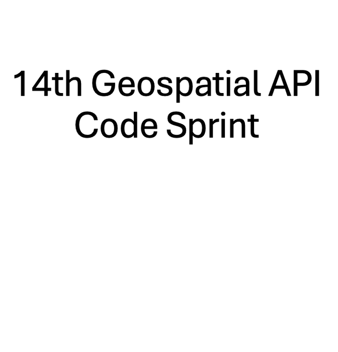
OGC Standards are developed through a member-driven consensus process, which creates royalty free, publicly available, open geospatial standards. The Open Geospatial Consortium (OGC) is the organisation which drives this process. It is supported by an active community of members, with involvement from a large range of organizations, as well as smaller ones.
Join OGC today!